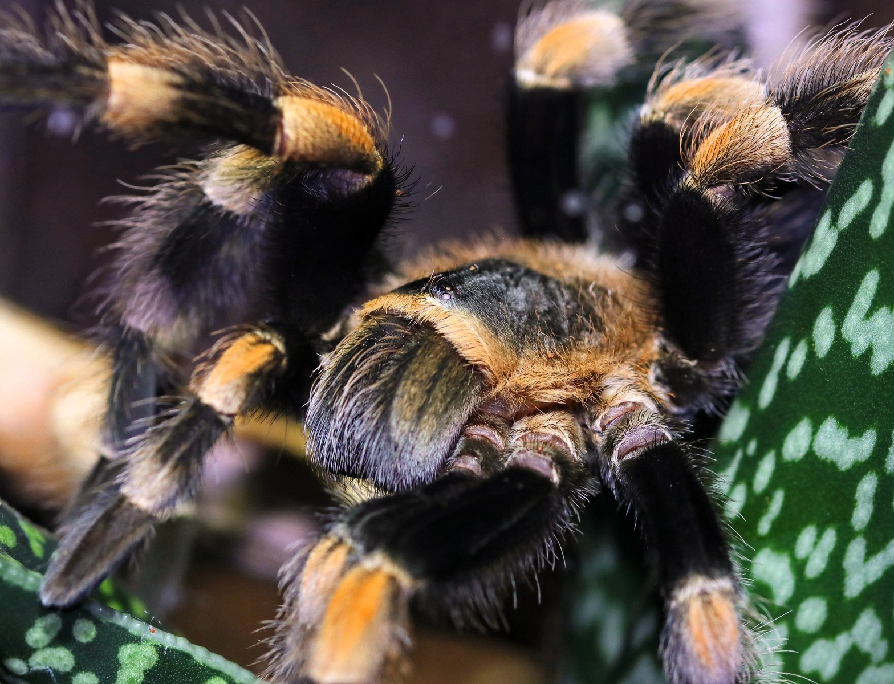
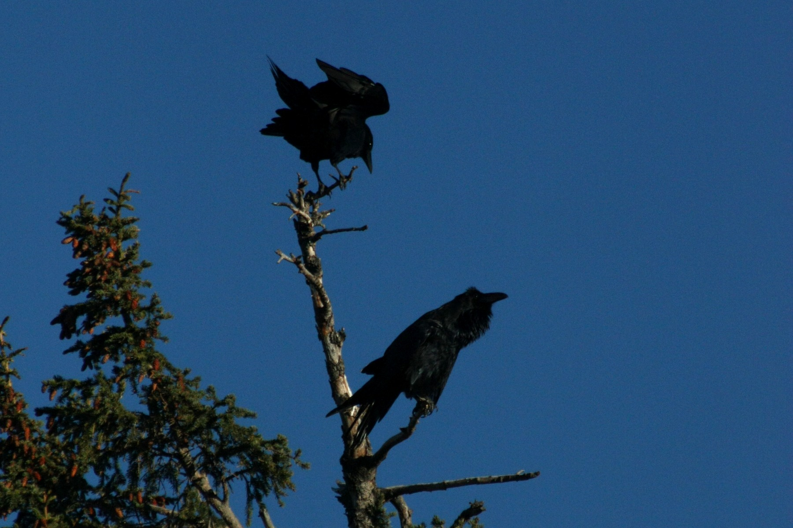
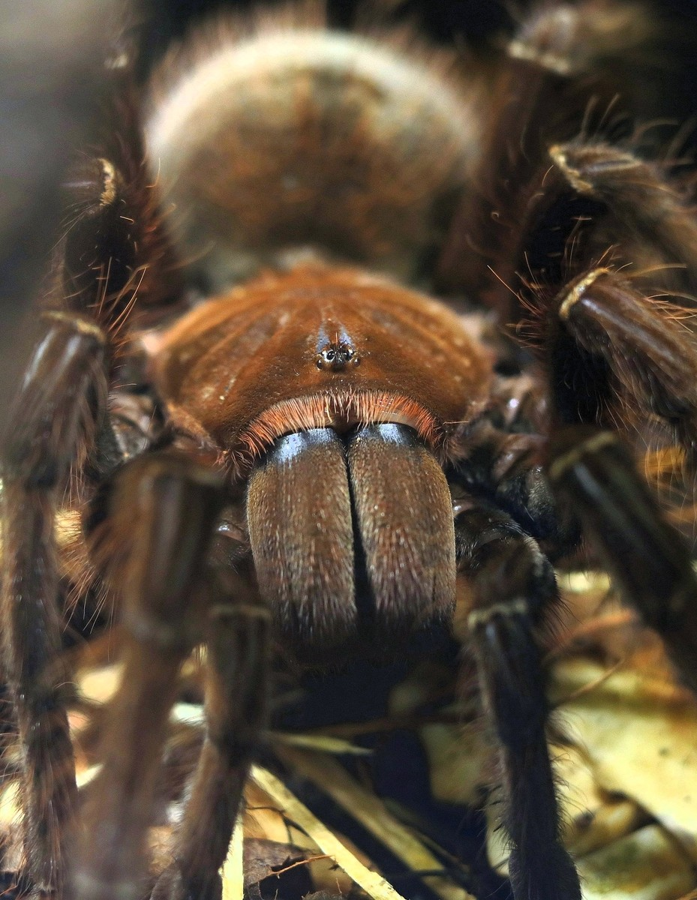
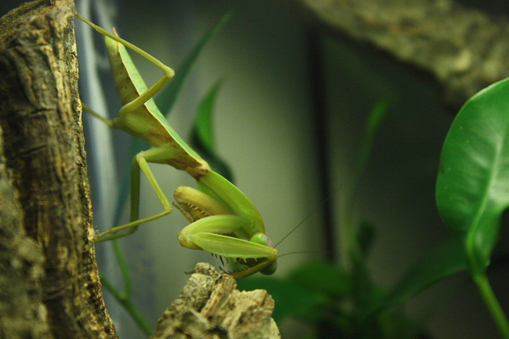

Kjennetegn
Oransjerøde bånd over leddene, mørk kropp og defensive urtikerende hår på bakkroppen.
Artsprofiler på norsk
Her møter du både dyr fra Introvertebrates-samlingen og dyr fotografert ute i naturen. Hver profil forklarer kjennetegn, levevis og mat – og gir deg én detalj å se etter selv.


Tinas observasjonsoppdrag
I hver profil finner du et kort merket med Tina. Der får du et lite «Finn detaljen», «Tenk etter» eller «Følg bevegelsen»-oppdrag. Poenget er å stoppe opp og oppdage noe du kanskje ikke la merke til først.
Velg et dyr
Profilene samler kjennetegn, levevis, mat og ett tydelig observasjonsoppdrag i samme format.

I samlingenBrachypelma hamorii
 I samlingen
I samlingenChromatopelma cyaneopubescens
 I samlingen
I samlingenMauremys reevesii
Norsk naturVipera berus
 Norsk natur
Norsk naturLutra lutra
 Norsk natur
Norsk naturOvibos moschatus
 Norsk natur
Norsk naturSitta europaea

Norsk naturCorvus corax

I samlingenTheraphosa apophysis

Fra dyrearkivetMantodea
 I samlingen
I samlingenPachnoda marginata
I samlingen · hunn
Brachypelma hamorii · Theraphosidae · Mexico
En jordlevende tarantell som viser hvor viktig et trygt skjulested er – og hvorfor den tydelige røde og svarte fargen ikke betyr at dyret vil bli håndtert.
Oransjerøde bånd over leddene, mørk kropp og defensive urtikerende hår på bakkroppen.
Arten forbindes med sesongtørre deler av vestlige Mexico og bruker dype, silkekledde jordhuler eller naturlige hulrom.
Den venter nær skjulestedet og reagerer på vibrasjoner fra insekter og andre små byttedyr.
Legg merke til hvordan silken rundt åpningen utvider området der Sabrina kan kjenne små bevegelser.
 Eget fotografi · dyrehold
Eget fotografi · dyreholdI samlingen · hunn
Chromatopelma cyaneopubescens · Theraphosidae · Venezuela
Blå bein, grønnlig ryggskjold og oransje bakkropp gjør Ruby lett å kjenne igjen. Like spennende er nettet hun bygger over bakken og mellom festepunkter.
Den sterke blåfargen er strukturell: mikroskopiske strukturer påvirker hvordan lyset reflekteres.
Arten kommer fra den tørre Paraguaná-halvøya og kombinerer et skjulested med store flater av silke.
Silken varsler når et lite byttedyr beveger seg i nærheten. Ruby kan da løpe ut fra skjulestedet.
Se hvordan trådene kobler sammen bakken, planter og skjulestedet til ett sansekart.
 Eget fotografi · dyrehold
Eget fotografi · dyreholdI samlingen · hunn
Mauremys reevesii · Geoemydidae · Øst-Asia
En ferskvannsskilpadde med tre tydelige kjøler langs ryggskjoldet. Sonja viser hvorfor en vannlevende skilpadde også trenger tørre steder, varme og mulighet til å velge.
Tre langsgående rygger på skallet, mørk kropp og fine lyse striper rundt hodet.
Arten bruker dammer, stille elver, våtmarker og andre rolige ferskvannsmiljøer, men går også opp på land for å sole seg.
Den er alteter og kan spise både smådyr, åtsel og plantemateriale. Dietten kan endre seg med alder og tilgjengelighet.
Når Sonja svømmer, se hvordan frambeina styrer mens bakbeina gir kraft og balanse.
Eget fotografi · norsk naturNorsk natur
Vipera berus · Viperidae
En middels stor og robust slange som finnes i mange åpne og halvåpne landskap. Dette svarte individet viser hvorfor farge alene ikke er nok når du skal kjenne igjen en art.
Fargen varierer fra grå og brun til helt svart. Mange har et mørkt sikksakkbånd, men hos svarte individer kan mønsteret være vanskelig eller umulig å se.
Huggormen bruker sol og skygge til å regulere kroppstemperaturen og søker skjul når den vil hvile, kjøle seg ned eller unngå fare.
Smågnagere er viktige byttedyr. Arten kan også ta blant annet frosk, firfisle og små fugler, avhengig av størrelse og hva som finnes lokalt.
Hold god avstand og la slangen være i fred. Se heller hvordan farge og kroppsstilling gjør den vanskelig å oppdage mellom løv og planter.
Norsk natur
Lutra lutra · Mustelidae
Oteren lever mellom to verdener. Den beveger seg effektivt i vann, men hviler, markerer og forflytter seg også på land.
Lang kropp, kraftig hale, tett vannavstøtende pels og følsomme værhår rundt snuten.
I Norge finnes den ved kysten, elver, innsjøer og våtmark. Den bruker skjul langs bredden og kan bevege seg langt mellom gode områder.
Fisk er viktig, men oteren tar også andre dyr i og ved vannet. Værhårene kan registrere bevegelser og trykkendringer.
Følg bølgen bak hodet. Den avslører hvor mye av framdriften som skjer under overflaten.
Eget fotografi · norsk fjellnaturNorsk natur · innført art
Ovibos moschatus · Bovidae
Moskusen ser forhistorisk ut, men er et nålevende arktisk klovdyr. Bestanden på Dovrefjell stammer fra dyr som ble satt ut – arten er derfor ikke opprinnelig norsk.
Lang dekkpels, svært varm underull, brede hover og horn som bøyer seg ned langs hodet.
Den lever i åpne fjell- og tundraområder og bruker flokk, pels og energisparing for å møte kulde og vind.
Moskus er planteeter og finner gress, starr, urter, vier og andre planter – også når mye ligger under snø.
Observer bare på lang avstand. Se hvordan dyrene plasserer seg i forhold til vind, terreng og resten av flokken.
Eget fotografi · norsk naturNorsk natur
Sitta europaea · Sittidae
En liten skogsfugl med en helt spesiell klatreteknikk. Spettmeisen kan bevege seg med hodet først nedover stammen mens den leter etter mat i barksprekker.
Blågrå rygg, lyst bryst, en mørk stripe gjennom øyet og et langt, spisst nebb.
Den bruker trær som både matfat, utkikkspunkt og bosted. Reiret legges i et hulrom, og en for stor åpning kan snevres inn med leire.
Insekter og edderkoppdyr er viktige i sommerhalvåret. Frø og nøtter blir viktigere gjennom høst og vinter, og noe mat kan gjemmes til senere.
Følg retningen fuglen klatrer. Spettmeisen kan gå både oppover og nedover uten å bruke halen som støtte.
Norsk natur
Corvus corax · Corvidae
Ravnen er en stor kråkefugl med kraftig nebb, dype lyder og en hale som gir et godt artskjennetegn når fuglen flyr.
Svart fjærdrakt, kraftig nebb, bustete strupefjær og en tydelig kileformet hale.
Ravner bruker skog, fjell, kyst og åpne landskap. De lever ofte i par og kan undersøke store områder etter mat.
Ravnen spiser variert, fra åtsel og smådyr til egg, frø og annen mat den finner. Hukommelse gjør det mulig å vende tilbake til gode steder.
Se på halen når fuglen flyr. Kileformen skiller den fra kråkas mer vifteformede hale.
I samlingen · hunn
Theraphosa apophysis · Theraphosidae · nordlige Sør-Amerika
Siuzi er en svært stor, jordlevende tarantell. Størrelsen er lett å legge merke til, men de tette hårene, de kraftige munndelene og den rolige ventingen forteller like mye.
Kraftig kropp, lange hårete bein og tydelige chelicerer. Unge dyr kan vise mer rosa fargetoner enn voksne.
Arten bruker bakken, løvlaget og huler eller skjul den kan grave ut. Et skjulested gir både mørke, stabilitet og en trygg retrett.
Som bakholdsjeger registrerer den vibrasjoner og tar passende smådyr som kommer nær nok.
Se hvordan hårene følger hele kroppen. Noen er sansehår, mens urtikerende hår på bakkroppen inngår i forsvaret.
Fra dyrearkivet
Mantodea · bildet viser Rhombodera basalis
Knelere er insekter bygget for å vente, oppdage bevegelse og gripe raskt. Fotografiet kommer fra dyrearkivet og viser ikke et dyr som presenteres som del av dagens samling.
Trekantet, bevegelig hode og frambein med pigger som kan foldes tett sammen foran kroppen.
Mange arter sitter mellom blader, kvister eller bark der farge og kroppsform gjør dem vanskelige å oppdage.
Kneleren følger bevegelige byttedyr med hodet og slår fram gripebeina når avstanden er riktig.
Finn de tre beinparene. Det fremste paret er spesialisert til fangst, men er fortsatt bein.
Eget fotografi · dyreholdI samlingen · blandet koloni
Pachnoda marginata · Scarabaeidae · Afrika
Solbillene viser en fullstendig forvandling: larven, puppen og den voksne billen ser svært forskjellige ut og bruker miljøet på ulike måter.
Voksne biller har mønstrede dekkvinger, kraftige bein og antenner som hjelper dem å undersøke omgivelsene.
De voksne er aktive over underlaget, mens larvene utvikler seg skjult i rikt, nedbrutt organisk materiale.
Voksne besøker frukt og blomster. Larvene bruker nedbrutt plantemateriale og bidrar til å føre næringsstoffer videre.
Sammenlign en larve med en voksen bille. Hvilke kroppsdeler kan du fortsatt kjenne igjen etter forvandlingen?
Flere profiler kommer
Nye norske artsprofiler bygges rundt egne fotografier, korte observasjoner og kvalitetssikrede kilder. Målet er ikke å fylle en katalog raskest mulig, men å gjøre hvert møte verdt tiden.